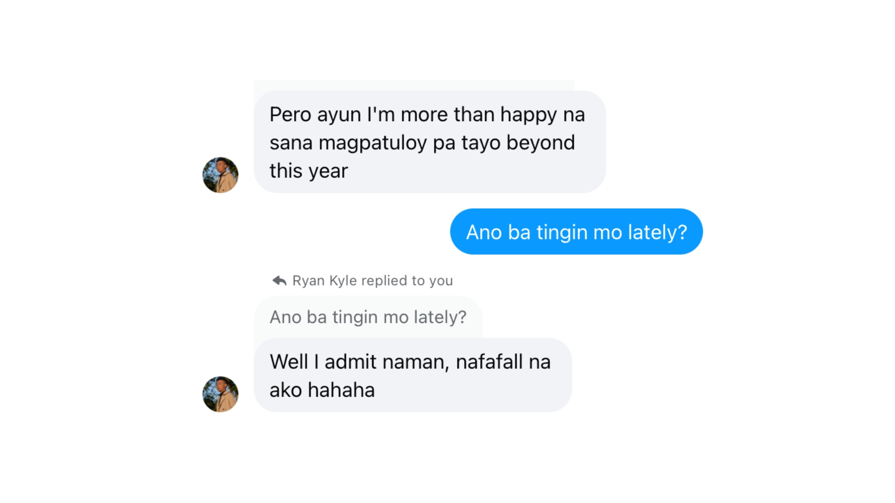

Confession Night 🫣
September 29, 2024
Alam kong iba na nung nag-ask ka if pwede ako magtasa ng pencils mo for boards. Kuasap ko si Anj non, and sa usap namin, don na ako nagkaroon ng lakas ng loob na tanungin kung ano na bang nararamdaman mo.
Nakakastress pala mag-abang ng chat habang kumakabog na dibdib mo hahahaha Di ko pa ma-articulate nang maayos sarili ko nung gabi na yon. Kinailangan ko pa mag-long message kinabukasan HAHAHAHA
Parehas tayong nagkasundo na hindi tayo nagmamadali, and hindi rin tayo naghahanap agad ng label. Thankful ako na clear for us both during that time na we have feelings for each other and that we made it a point to say na we're exclusively dating.
Eventually, sinundan natin ng pumkpin spice Starbucks online date (na hindi na natin uulitin HAHAHAHA). It was so refreshing to have a moment with someone who likes you back.
Naalala ko pa na ambilis mo makauwi non, samantalang kalalabas ko pa lang ng CR?! HAHAHAHA
— Love, Megan